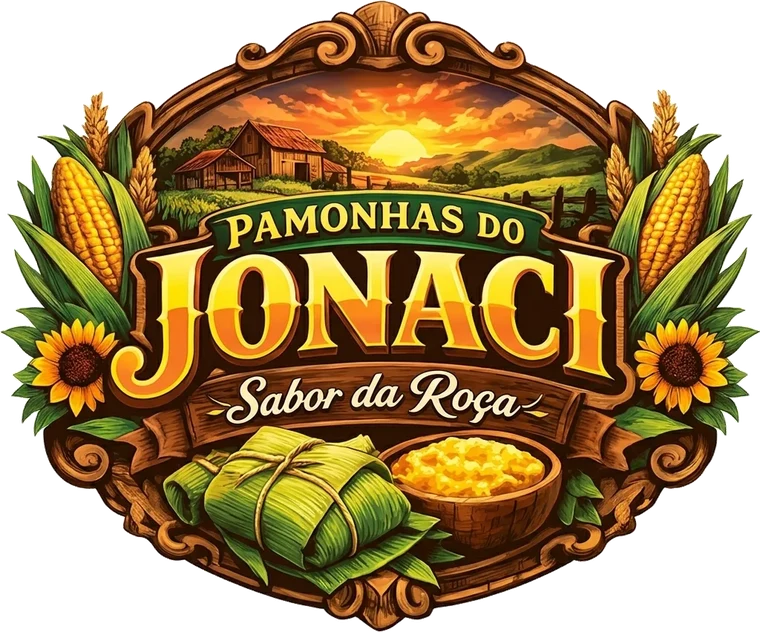
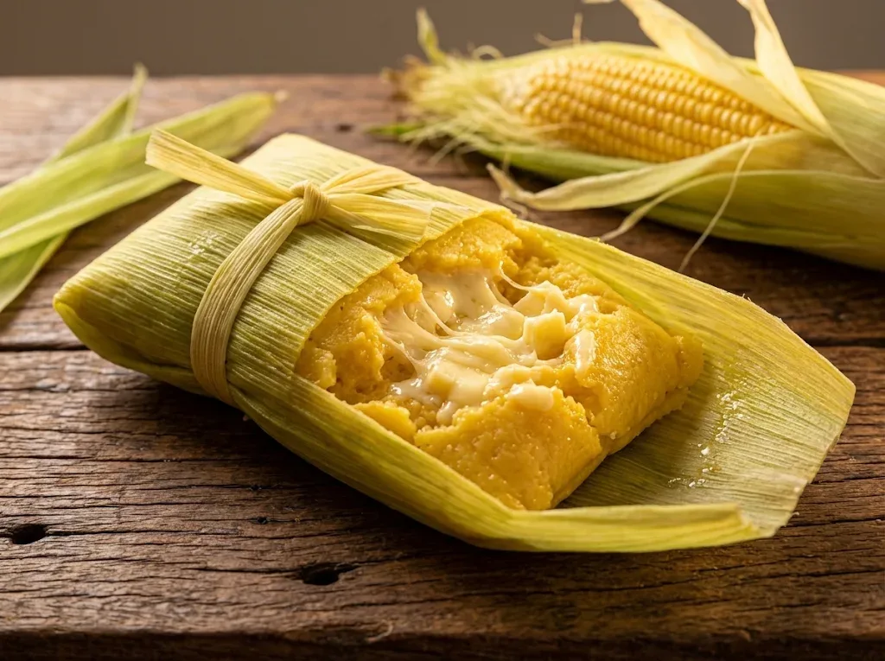
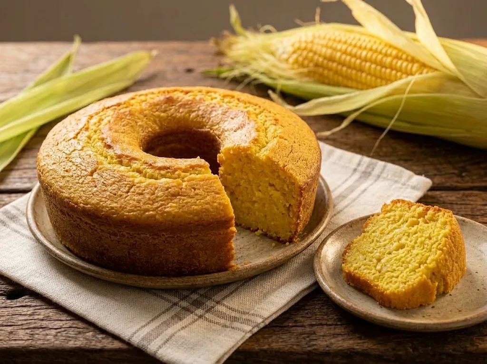

Escolha de estilo · Pamonhas do Jonaci
Seis jeitos de vestir a mesma página: abertura com o nome e o "feito hoje", cardápio (pamonha doce, de sal, temperada, bolo de milho e curau), encomendas pelo WhatsApp e a localização com o botão "Como chegar", que abre o Google Maps. Cada quadro mostra só a primeira tela, no tamanho de um computador (1440 × 900), reduzida. O logo foi redesenhado no Gemini a partir da faixa; as fotos de pamonha, bolo de milho e curau também são do Gemini (ilustrativas); o selo "Rei do Milho" tem a foto do Jonaci, com autorização dele.
O que vi nas fotos da loja
- Marca: "Pamonhas do Jonaci · Sabor da Roça", logo em moldura de madeira com milho, girassol e pamonha. Lema: "A melhor do Brasil · A 2ª melhor do mundo".
- Cores da loja: céu azul, campo verde, madeira e amarelo do milho no logo; amarelo, vermelho e preto nas faixas de cardápio e encomendas.
- Produtos com tabela na faixa (250 g): pamonha doce com queijo, de sal com queijo e temperada (queijo, linguiça calabresa, cheiro-verde e pimenta). "Fabricadas hoje! Válidas para consumo somente hoje."
- Encomendas: 61 99809-4035 (Jonaci) e 61 98383-2381 (Deusa). Endereço: QNN 20, Conjunto E, Casa 01, Guariroba, Ceilândia Sul.
- Fora das prévias: o Shrek das faixas, porque é personagem com dono (DreamWorks) e não pode ir para um site. O horário aparece cortado nas fotos ("Segunda… h"), então ainda falta.
A · Faixa da barraca a página é a própria faixaindicado

Pamonha feita hoje, do jeito da roça
Doce com queijo, de sal com queijo e temperada. Também bolo de milho e curau.

Pamonhas · 250 gDoce com queijo320 kcalDe sal com queijo277 kcalTemperada290 kcal
Bolo de milhoMilho verdefeito hojeInteiro ou fatiaencomenda CurauCom canelafeito hojeNo poteencomenda
CurauCom canelafeito hojeNo poteencomenda
O site vira a faixa que já está pendurada na loja: amarelo, vermelho e preto, letras altas e uma tarja passando com "Fabricadas hoje!". Cada produto é um cartão no formato da tabela da faixa. Quem já conhece a barraca reconhece na hora.
Origem: taste-skill, direção "a página é o objeto"; cores tiradas da faixa da loja. Fontes: Anton e Archivo.
B · Sabor da Roça as cores do logoindicado
CurauCremoso, com canelaO céu, o campo e a madeira do logo viram a página inteira: o logo grande no centro, o lema na letra cursiva azul das faixas e os produtos em plaquinhas sobre um deck de madeira. É o mais alegre e o mais "roça".
Origem: taste-skill, modo "brand" (cores do próprio cliente). Fontes: Rye, Yellowtail e Figtree.
C · Papel e nogueira padaria artesanal
Pamonha feita hoje, com milho verde.
Doce, de sal ou temperada, mais bolo de milho e curau. Encomende pelo WhatsApp e retire na loja.
Encomendar no WhatsAppComo chegarFundo de papel, marrom de nogueira e letra serifada: parece cardápio de padaria de bairro caprichada. O cardápio aparece em lista com pontilhado, como menu impresso. Mais calmo e "arrumado".
Origem: taste-skill, paleta "papel e nogueira", feita para padaria, e o par de fontes Literata e Figtree que ela sorteou.
D · Verde-garrafa e milho letra gigante
Pamonha
do dia
Feita hoje, vendida hoje. Doce, de sal ou temperada.
Guariroba · Ceilândia Sul
A palavra "pamonha" enorme abre a página, com o amarelo do milho marcando o meio dela. Verde-garrafa escuro e fundo quase branco: moderno, direto e bom no celular. Menos "roça", mais "marca".
Origem: taste-skill, primeira paleta sorteada para padaria ("verde-garrafa e amarelo") e a fonte Gabarito.
E · Cartaz de quermesse retrô de festa
Pamonhas do Jonaci
Pamonha doce, de sal e temperada, bolo de milho e curau. Tudo feito no mesmo dia.
Encomendar no WhatsAppComo chegarmundo
Cartaz antigo de quermesse: bandeirinhas no topo, letra de pôster e um carimbo redondo com a piada da loja, "2ª melhor do mundo". Combina com milho e com época de festa junina, e chama atenção.
Origem: UI UX Pro Max, cores de "Restaurante" (laranja, vermelho e marrom) e par de fontes "Retro Vintage" (Abril Fatface e Merriweather).
F · Caderno de receitas feito à mão
Hoje tem pamonha fresquinha
Receita da roça, feita todo dia na Guariroba. Escolha a sua e encomende:
- Doce com queijo
- De sal com queijo
- Temperada com calabresa
- Bolo de milho e curau
curau com canelaFolha de caderno com pauta e margem, letra de mão azul (a mesma cor do lema das faixas), marca-texto amarelo e fotos presas com fita. Passa a ideia de comida caseira, de família.
Origem: UI UX Pro Max, par de fontes "Handwritten Charm" (Caveat e Quicksand) e cores da linha "Bakery/Cafe".
Página de trabalho, não é o site. Em todos os estilos o botão "Como chegar" abre o endereço no Google Maps, e os botões de encomenda vão para o WhatsApp. Dá para misturar: por exemplo, a abertura do B com os cartões de tabela do A.